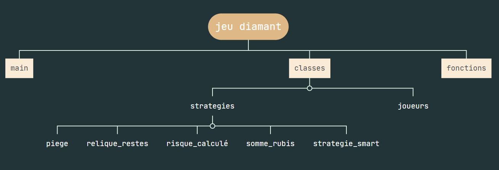

Introduction au Développement de l'application
L'objectif de cette page est de présenter notre jeu de société "Diamant" ainsi que les stratégies que nous avons développées. Notre objectif est de fournir aux utilisateurs une expérience immersive et divertissante en explorant les multiples facettes de ce jeu captivant. Venez découvrir l'évolution de notre application basée sur le jeu de société "Diamant". Nous vous invitons à plonger dans l'univers captivant de ce jeu et à explorer les différentes fonctionnalités que nous avons intégrées. Suivez notre parcours de développement et découvrez les technologies utilisées, l'architecture de l'application, les outils et l'environnement de développement, ainsi que les résultats et fonctionnalités de notre application.
Technologies utilisé
- Python :
Python est un langage de programmation puissant et polyvalent utilisé pour développer notre jeu de société "Diamant". Il offre une syntaxe simple et concise, ce qui facilite le développement et la maintenance du code. Python nous a permis de mettre en œuvre la logique du jeu, les règles du gameplay pour offrir une expérience de jeu immersive et divertissante.
- HTML5 :
HTML5 est le langage de balisage utilisé pour la structure et le contenu de notre application. Il nous a permis de définir les différents éléments de la page, tels que les titres, les paragraphes, les images et les liens. Grâce à HTML5, nous avons pu créer une structure logique et sémantique pour notre application, facilitant ainsi l'accessibilité et la maintenance du code.
- CSS3 :
CSS3 est utilisé pour la mise en forme et le style de notre application. Il nous a permis de définir des règles de style pour les différents éléments de la page, tels que les couleurs, les polices, les marges et les positions. Grâce à CSS3, nous avons pu rendre notre site web visuellement attrayant.
Structure de l'application

Notre code pour le jeu "Diamant" est organisé de manière logique et modulaire. Il se compose principalement d'un fichier principal appelé "main.py" où le déroulement du jeu est géré. Avant de créer la liste des joueurs et de commencer le jeu, nous utilisons ce fichier pour configurer les paramètres de départ et effectuer les actions nécessaires.
Parallèlement, nous avons créé un dossier appelé "classes" qui se trouve au même niveau que le fichier "main.py". Ce dossier contient des fichiers essentiels pour le fonctionnement du jeu. Par exemple, le fichier "joueur.py".
La classe Player que nous avons ici représente un joueur dans le jeu. Lors de sa création, chaque joueur se voit attribuer un coffre, un sac, un nom, une stratégie de jeu et un état actif, Le coffre est représenté par une liste d'entiers de taille 5 ou chaque case represente les rubis collectés par le joueur lors d'une manche. Le sac est un entier qui représente le nombre de rubis temporaires que le joueur peut transporter. Le nom est simplement le nom du joueur. La stratégie de jeu est utilisée pour déterminer les actions du joueur lorsqu'il joue une manche. L'état actif indique si le joueur est toujours en jeu. La classe Player dispose également de deux méthodes. La méthode play permet au joueur de jouer une manche en utilisant sa stratégie de jeu pour prendre des décisions en fonction de l'état actuel du jeu. La méthode score calcule le score du joueur en faisant la somme des rubis présents dans son coffre
À l'intérieur du dossier "classes", nous avons également créé un sous-dossier appelé "strategies". Ce dossier regroupe plusieurs fichiers représentant différentes stratégies utilisées par les joueurs dans le jeu. Ces stratégies comprennent des approches telles que le piège,la relique restante, le risque calculé, la somme des rubis, et la stratégie smart. Chaque fichier de stratégie définit la logique et les actions spécifiques liées à la stratégie correspondante.
Strategies :
La classe PiegeStrategy représente une stratégie de jeu dans le jeu "Diamant" qui se concentre sur la gestion des pièges. La méthode play de cette stratégie vérifie si le joueur a encore des rubis dans son sac et si trois pièges ont été défaussés jusqu'à présent. Si ces conditions sont remplies, le joueur décide de sortir de la manche, sinon il décide de rester. La méthode commence par définir une liste "pieges" qui contient toutes les pieges exist dans le jeu. on a definie variable "nbre_piege" qui va compter le nombre de pièges présents dans la défausse. Elle effectue une boucle sur la défausse et, si une carte correspond à l'un des pièges de la liste, elle incrémente "nbre_piege" de 1.
La classe "ReliqueRestes" représente une stratégie de jeu dans le jeu "Diamant". La méthode utilise une fonction externe "exist_relique()" située dans un fichier de fonctions pour vérifier si une relique existe dans la défausse. De plus, elle importe la bibliothèque "random". Cette strategie se base sur la présence de reliques dans la défausse et sur le nombre de rubis restants sur le sol. Dans la méthode play, cette stratégie vérifie d'abord s'il y a une relique dans la défausse et s'il y a des rubis restants sur le sol. Si les deux conditions sont remplies, le joueur a 10% de chances de décider de sortir de la manche. Si une relique est présente dans la défausse mais qu'il n'y a plus de rubis au sol, le joueur a 90% de chances de sortir. Si aucune relique n'est présente dans la défausse et si le nombre de cartes dans la défausse est supérieur ou égal à 6, le joueur décide de sortir. Sinon, le joueur décide de rester.
La classe RisqueCalcule représente une stratégie de jeu dans le jeu "Diamant" qui se base sur le calcul des risques en fonction de la quantité de rubis dans le sac du joueur et de la présence de pièges dans la défausse.Le code commence par définir une liste de pièges possibles ("serpents", "boulets", "pics", "araignées", "lave"). Ensuite, il définit une fonction "exist_piege(defausse)" qui vérifie si un piège existe dans la défausse en comparant chaque élément de la liste "pieges" avec les éléments de la défausse. Dans la méthode play, cette stratégie vérifie d'abord si le nombre de rubis dans le sac du joueur est supérieur ou égal à 5. Si c'est le cas, le joueur décide de sortir si un piège est présent dans la défausse, sinon il reste jusqu'à ce qu'un piège apparaisse. Si le nombre de rubis dans le sac est inférieur à 5, le joueur décide de rester et ne sort pas, quelle que soit la présence de pièges dans la défausse.
La classe "rubistrategy" représente une stratégie de jeu basée sur le nombre total de rubis disponibles pour le joueur, en tenant compte à la fois des rubis dans son sac et des rubis restants sur le sol. La méthode commence par calculer la somme des rubis disponibles pour le joueur en ajoutant le nombre de rubis dans son sac et le nombre de rubis restants sur le sol dans la variable somme_rubis. Ensuite, la méthode évalue une condition : si la somme des rubis est supérieure ou égale à 9 , le joueur choisit de sortir du jeu et retourne True. Sinon, s'il n'a pas suffisamment de rubis, il choisit de rester dans le jeu et retourne False.
La classe "smart" est la dernière stratégie dans le dossier strategies. Pour cette classe on aura besoin d'importer les fonctions exist_relique, nb_pieges et je_suis_seul qu'on va l'utiliser après. on initialise la variable tours_joue par la longueur de défausse.
La méthode commence par vérifier le nombre de tours déjà joués. Si le nombre de tours est inférieur à 6, le joueur choisit de rester dans le jeu et retourne False. Sinon, la méthode vérifie si une relique existe dans la défausse en appelant la fonction "exist_relique" importer de fichier fonction. Si une relique est présente, le joueur évalue d'autres conditions tel que S'il est seul dans le jeu , et s'il y a au moins 2 pièges dans la défausse, le joueur choisit de sortir du jeu et retourne True.Si le joueur n'est pas seul, il vérifie la somme des rubis disponibles pour lui tel que les rubis au sol et les rubis dans son sac . Si la somme des rubis est supérieure ou égale à 7, le joueur choisit de sortir du jeu et retourne True. Sinon, il décide de rester dans le jeu et retourne False. Si aucune relique n'est présente dans la défausse, le joueur évalue les mêmes conditions en fonction de la somme des rubis disponibles. Si la somme des rubis est supérieure ou égale à 7 et s'il y a au moins 2 pièges dans la défausse, le joueur choisit de sortir du jeu et retourne True. Sinon, il décide de rester dans le jeu et retourne False.
Nous avons créé un autre fichier appelé "fonctions" au même niveau que le fichier "main.py". Ce fichier contient des fonctions supplémentaires que nous avons développées pour faciliter le déroulement du jeu.
Fonction nécessaire pour déroulement d'une manche :
La fonction "melange" prend un ensemble de cartes en entrée et utilise la fonction "random.shuffle" de la bibliothèque "random" pour les mélanger aléatoirement. Elle renvoie ensuite l'ensemble de cartes mélangé afin qu'il puisse être utilisé dans la prochaine fonction. La fonction "tirer" prend en entrée l'ensemble de cartes mélangées et une liste contenant un seul élément représentant le rang de la carte à tirer. Elle récupère la carte correspondante à l'indice donné dans la liste "rang", puis incrémente le rang pour la prochaine carte. La fonction renvoie la carte qui a été tirée. La fonction "distribue" distribue les cartes tirées aux joueurs actifs. Elle prend en entrée une liste de joueurs et un nombre de rubis par joueur. Elle itère à travers chaque joueur actif et ajoute les rubis spécifiés à leur sac respectif.
La fonction "recherche_carte" est utilisée pour vérifier si une carte spécifique existe déjà dans la défausse. Elle prend en paramètres la liste defausse et la carte à rechercher. Si la carte est présente dans la défausse, la fonction renvoie True, Sinon, elle renvoie False. La fonction "decision" est utilisée pour déterminer la décision d'un joueur, s'il doit sortir ou rester. Elle prend en paramètre "is_active" qui indique si le joueur est actif ou non. La fonction renvoie True si le joueur décide de sortir, et False s'il décide de rester. La fonction "exist_relique" est utilisée pour vérifier si une carte relique existe dans la défausse. Elle prend en paramètre la liste defausse. La fonction itère à travers chaque carte dans la défausse et vérifie si cette carte est également présente dans une liste appelée reliques.
La fonction "je_suis_seul" sert à vérifier si un joueur est reste seul dans la manche . Elle prend en paramètre une liste les_joueurs qui représente les joueurs du jeu. et la fonction "nb_pieges" sert à compter le nombre de pièges dans la défausse. La fonction initialise une variable "nb" à 0 et une liste pieges contenant les noms des différents pièges. Ensuite, la fonction itère à travers chaque carte dans la défausse et vérifie si cette carte est présente dans la liste des pièges. Si c'est le cas, elle incrémente la variable nb de 1. Enfin, la fonction renvoie le nombre total de pièges trouvés dans la défausse.
Procédure d'une manche :
La fonction `manche` simule une manche du jeu "Diamant". Elle prend en entrée les paramètres suivants: cartes(la liste des cartes disponibles pour la manche), reliques(la liste des reliques restantes), list_joueurs( la liste des joueurs participant à la manche), id_manche (l'identifiant de la manche en cours), data_partie (une liste qui stocke les données de chaque tour de la manche) La fonction commence par initialiser les variables nécessaires, telles que la liste de la défausse, l a liste des reliques tirées, l es joueurs actifs et inactifs, et le nombre de joueurs actifs
la fonction manche effectue également un mélange aléatoire des cartes. Ensuite, elle entre dans une boucle principale tant qu'il reste des joueurs actifs et qu'il n'y a pas de piège répété dans la défausse. À chaque tour de boucle, une carte est tirée de l'ensemble de cartes mélangé.
Si la carte tirée est un piège, elle est ajoutée à la défausse. Si la carte est un rubis, elle est distribuée entre les joueurs actifs de manière équitable, et le reste des rubis est enregistré. Si la carte est une relique, elle est ajoutée à la défausse, et la relique est enregistrée.
Les informations de chaque tour sont collectées dans un dictionnaire appelé `turn`, qui contient des détails tels que le tour lui-même, l e type de carte tirée, le nombre de pièges dans la défausse, les rubis restants, l'état des reliques, et les informations sur les joueurs. Ensuite, pour chaque joueur actif, sa stratégie est utilisée pour déterminer s'il doit rester ou sortir. Si le joueur décide de sortir, il devient inactif et son score est enregistré dans son coffre pour la manche en cours. Les joueurs inactifs sont ensuite ajoutés à la liste des joueurs inactifs
Après avoir traité tous les joueurs actifs, si des joueurs sont devenus inactifs, le reste des rubis est réparti entre eux de manière équitable. Si un seul joueur est devenu inactif et qu'il y a des reliques tirées, les reliques sont ajoutées à son coffre. Enfin, les joueurs inactifs voient leur sac de rubis réinitialisé à 0, la liste des joueurs inactifs est vidée, et le nombre de joueurs actifs est mis à jour. Les informations du tour sont ajoutées à la liste `data_partie`. Finalement, la fonction renvoie la liste des reliques restantes et les données de la manche (la liste `data_partie`).
Déroulement d'une partie du jeu diamant :
La fonction `cinq_manches` simule cinq manches consécutives du jeu "Diamant". Elle prend en entrée l'identifiant de la première manche (`id_manche`), la liste des reliques restantes, la liste des joueurs et la liste `data_partie` qui stocke les données de chaque tour. La fonction exécute la boucle `for` sur une plage de 5, ce qui représente les cinq manches du jeu. À chaque itération, elle appelle la fonction `manche` pour simuler une manche avec les paramètres appropriés. Les reliques et les données de la manche sont mises à jour à chaque itération. Finalement, la fonction renvoie la liste des joueurs mise à jour et la liste `data_partie` contenant les données de toutes les manches. La fonction `parties` simule une partie complète du jeu "Diamant". Elle prend en entrée la liste des joueurs, la liste des reliques, la liste `data_partie` et le nombre de tours (`tour`) à jouer. La fonction initialise une liste `list_score` de scores, où chaque élément est initialisé à 0, pour chaque joueur. Ensuite, elle entre dans une boucle `for` qui itère sur la plage du nombre de tours. À chaque itération, elle appelle la fonction `cinq_manches` pour simuler cinq manches consécutives. Les joueurs et les données de la partie sont mis à jour à chaque itération. Après avoir simulé toutes les manches, la fonction parcourt les joueurs et met à jour les scores en utilisant la méthode `Player.score`. Les scores mis à jour sont stockés dans la liste `list_score`. Finalement, la fonction renvoie la liste `list_score` contenant les scores finaux des joueurs et la liste `data_partie` contenant les données de toutes les manches.
La fonction fichier permet d'enregistrer les données de partie dans un fichier JSON. Elle prend en entrée la liste data_partie contenant les données de toutes les manches. La fonction ouvre un fichier data.json en mode écriture et utilise la fonction json.dump pour écrire les données dans le fichier. Une fois l'écriture terminée, le fichier est fermé. La fonction load permet de charger les données de partie dans un format utilisable pour l'apprentissage automatique. Elle prend en entrée la liste data_partie contenant les données de toutes les manches et la liste list_joueurs contenant les informations sur les joueurs. La fonction crée deux listes vides X_finale et Y_finale pour stocker les données d'entraînement et les étiquettes respectivement. Ensuite, la fonction itère sur chaque tour dans les données de partie. À chaque tour, elle itère sur chaque joueur en utilisant une boucle for et récupère l'information sur l'état actif du joueur dans ce tour.
La fonction vérifie si le joueur est inactif et n'est pas sorti (était actif et maintenant inactif). Si le joueur est inactif et n'est pas sorti, la fonction passe à l'itération suivante. Sinon, elle ajoute les informations pertinentes à la liste x et les étiquettes correspondantes à la liste y. Les informations ajoutées à la liste x incluent le tour actuel, le nombre de rubis dans le sac du joueur, l'état du coffre du joueur (pour chaque manche), le score du joueur, le type de carte tirée (rubis, piège ou relique), le nombre de pièges sur la table, le nombre de rubis restants sur le sol et un indicateur si le joueur a testé les reliques dans ce tour. Finalement, les listes x et y sont ajoutées respectivement à X_finale et Y_finale. Avant de retourner les données, la fonction convertit X_finale et Y_finale en tableaux NumPy pour une utilisation plus facile. En résumé, la fonction load transforme les données de partie en un format adapté à l'apprentissage automatique, où X_finale contient les caractéristiques des joueurs dans chaque tour et Y_finale contient les étiquettes indiquant si les joueurs sont sortis ou non.
explication des lignes de code "main" :
Les stratégies de jeu sont importées depuis le module classes.strategies. La classe Player est importée depuis le module classes.joueur. Le module matplotlib.pyplot est importé pour la génération du graphe. Initialisation des variables : La variable cartes représente la liste des cartes disponibles dans le jeu. La variable reliques contient la liste des reliques disponibles dans le jeu.
Plusieurs instances de la classe Player sont créées et associées à différentes stratégies de jeu. Chaque joueur est ajouté à la liste list_joueurs. Initialisation des variables pour le suivi des scores et des données de partie : La variable data_partie est une liste vide qui sera utilisée pour stocker les données de chaque partie. La liste list_joueurs contient tous les joueurs créés.
La fonction parties() est appelée avec les arguments list_joueurs, reliques, data_partie et nbre_partie pour exécuter les parties. La fonction parties() renvoie la liste des scores de chaque joueur (list_score) et les données de partie mises à jour (data_partie). Stockage des données de partie : Les données de partie sont enregistrées dans un fichier à l'aide de la fonction fichier(data_partie). Les données sont stockées au format JSON dans le fichier "./data.json". Affichage des scores : La liste des scores (list_score) est affichée à l'aide de la fonction print(). Chaque score correspond à un joueur. Affichage du graphe : Les scores des joueurs sont affichés sous forme de diagramme à barres en utilisant la bibliothèque Matplotlib. Les joueurs sont représentés sur l'axe des abscisses et les scores sur l'axe des ordonnées. Le graphe est affiché à l'aide de la fonction plt.show(). Le code permet ainsi de simuler 1000 parties du jeu Diamond avec les joueurs ayant différentes stratégies, d'enregistrer les données de chaque partie et d'afficher les scores des joueurs sous forme de diagramme à barres.
Cette organisation modulaire de notre code nous a permis de séparer les responsabilités et de rendre notre code plus clair et facile à maintenir. Chaque fichier et dossier a son propre rôle et est interconnecté pour assurer le bon fonctionnement du jeu. Cette structure nous a également permis de réutiliser des parties de code et d'ajouter de nouvelles fonctionnalités au jeu de manière efficace et structurée
Outils et environnement
L'outil de développement utilisé pour ce projet est Python, un langage de programmation polyvalent et populaire. Python offre une syntaxe claire et concise, ainsi qu'une vaste gamme de bibliothèques et de frameworks qui facilitent le développement d'applications.
Pour exécuter le code du projet, il est nécessaire d'installer la bibliothèque NumPy. NumPy est une bibliothèque Python qui prend en charge les opérations mathématiques et les manipulations de tableaux multidimensionnels. Elle est largement utilisée dans le domaine de l'analyse des données et du calcul scientifique.
Résultats et fonctionnalités
Le résultat de notre projet est un moteur de jeu pour le jeu Diamond, accompagné de joueurs capables de jouer avec différentes stratégies. Le moteur de jeu permet aux joueurs de participer à des parties de Diamond et offre diverses fonctionnalités pour une expérience de jeu immersive.
Les fonctionnalités du moteur de jeu comprennent :
- La gestion des manches et des tours de jeu.
- La distribution des cartes et des rubis aux joueurs.
- La gestion des pièges et des reliques.
- Le calcul des scores des joueurs à la fin de chaque partie.
- L'enregistrement des données de jeu pour l'analyse et la visualisation ultérieures.